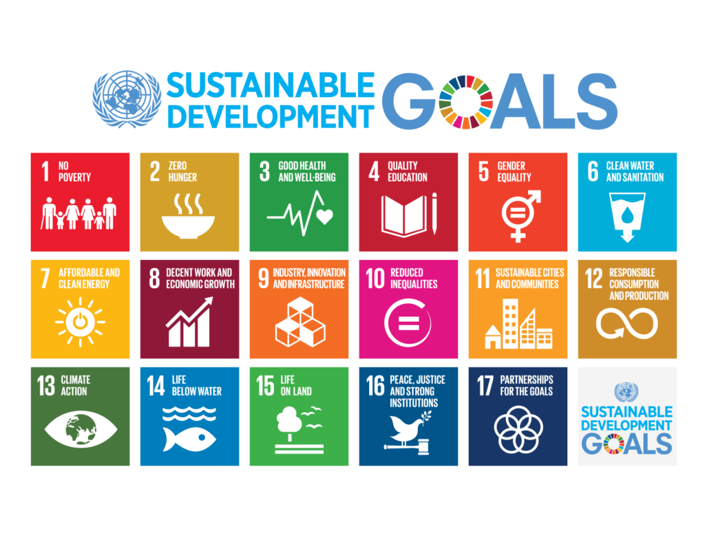

嗡嗡嗡，嗡嗡嗡，我是一隻小蜜蜂...
(一)永續發展的定義
2020年聯合國永續發展報告書中表示氣候變遷的進展速度遠比原先預估更為迅速，使得推動永續發展成果對環境保護的重要性更加凸顯。過去，企業在追求營利與成長的過程中，往往忽略對環境與社會所帶來的負面影響。為了減少人類長期以來對地球造成的損害，聯合國遂提出永續發展目標，期望全球共同朝向永續的未來邁進(楊敏里、謝佳霖，2021)。「永續發展包含許多不同之議題和層面，必須整合環境、經濟與社會三種不同層面觀點」(Johnson & Turner, 1999)。永續發展的核心在於維護生態的完整性，藉此確保人類的生存環境得以持續，並追求生態系統的最佳化狀態(Forman, 1990)。學者Barbier(1989)定義永續發展為「在確保自然資源的品質及其所提供服務的前提下，使經濟發展的淨利益增加到最大的限度」。在不損害環境品質與自然資源基礎的前提下，所進行的經濟發展是從經濟的角度來定義永續(Pearce，1995)。
總括來說，「永續發展的精神在於追求生態、經濟與社會三者之間的平衡」。人類的發展不應以破壞自然環境為代價，而是要在維護生態完整性的前提下，促進經濟成長與社會公平 (歐宗園，2012)。
(二)永續發展的目標
聯合國永續高峰會在2015年發布17項「永續發展目標(Sustainable Development Goals, SDGs)」目標，作為全球邁向永續發展的共同藍圖。這些目標旨在凝聚各國政府、地方單位、企業與公民團體等多方力量，指引未來15年的政策規劃、投資方向與具體行動。其核心願景是建構一個實現永續經濟成長、人人都擁有體面工作機會的世界，同時透過永續的方式利用自然資源，從空氣、土地到各類水體，確保地球環境得以長久維護與合理運用(聯合國，2015)。
永續發展目標17項關鍵目標包含以下：1.終結貧窮 2.消除飢餓 3.健康與福祉 4.優質教育 5.性別平權 6.淨水及衛生 7.可負擔的潔淨能源 8.合適的工作及經濟成長 9.工業化、創新及基礎建設 10.減少不平等 11.永續城鄉 12.責任消費及生產 13.氣候行動 14.保育海洋生態 15.保育陸域生態 16.和平、正義及健全制度 17.多元夥伴關係 (聯合國，2015)。

(三)永續的績效
永續績效作為企業衡量長期發展的重要指標，強調在追求經濟利益的同時，必須兼顧環境保護與社會責任，以達成多重面向的永續平衡(Kleindorfer et al., 2005；Paulraj, 2011；楊敏里、謝佳霖，2021)。根據Elkington (1998)所提出的三重底線（Triple Bottom Line）理論，企業永續績效涵蓋經濟、環境與社會三大構面，其整合程度影響企業的整體競爭優勢。企業若能積極推動永續行動，不僅有助於提升經濟效能，也能強化社會信任與責任形象，促進企業長期的穩定發展(Delmas & Toffel, 2004)。